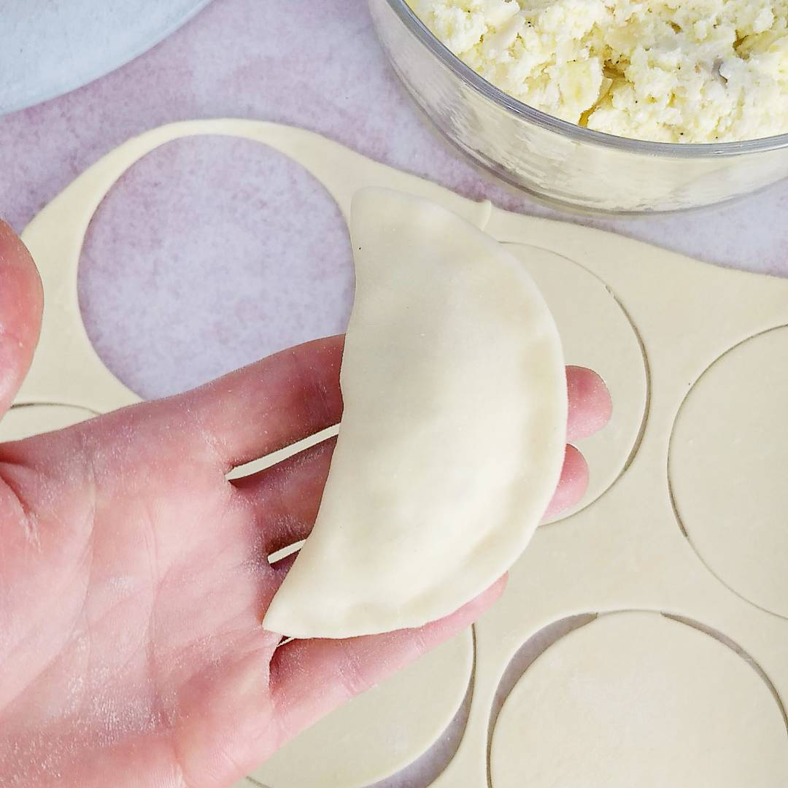

Pierogi

Description
Learn how to make the best pierogi dough. I recommend my versatile recipe to anyone looking for a tried-and-true method to create perfect pierogi dough. It's elastic, soft, and very easy to make.
Ingredients
- 500 g of all-purpose wheat flour (e.g., type 500)
- Half a teaspoon of salt
- 4 tablespoons of oil - 50 ml
- 1 cup of hot water - 250 ml
Steps
- In a wide bowl, sift the flour. Add salt and oil, such as canola oil. Grape seed oil and other mild-flavored oils work well too. Pour in a cup of hot, boiled water (250 ml) and knead the dough briefly, preferably by hand. Initially, if the dough is hot, you can mix it with a spoon.
- You can also confidently knead the dough in a machine like a Thermomix. The dough should be soft, pliable, and elastic. Wrap the dough ball in plastic wrap and set it aside for 30 minutes. After resting, the dough won't shrink during rolling.
- After this time, unwrap the dough from the plastic wrap and divide it into 3 portions. Set aside two pieces. Roll out one piece thinly on a floured surface. Cut out circles. Stretch each piece a bit more in your hands. Place the filling, like the classic 'ruskie' filling, in the center of each circle. Fold the pierogi in half and seal the edges. Arrange the pierogi side by side on the surface. To prevent the waiting pierogi from drying out, lightly cover them with a damp cotton cloth.
- For each batch, place the pierogi in a pot of salted, boiling water. Retrieve them after 3-4 minutes of floating to the surface. This way, you'll cook three batches of pierogi.